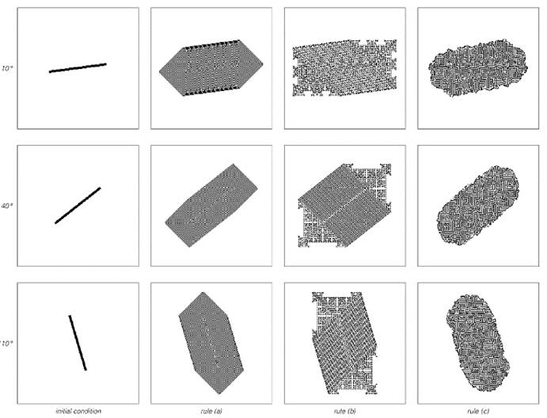

9.6 空间的本质
在努力为宇宙发展一个终极模型的过程中，第一步至关重要的是思考空间的本质——因为宇宙中的过程不可避免地发生在空间中。
现代物理学几乎总是假设空间是一个完美的连续体，物体可以放置在绝对任何位置。但人们当然可以想象空间的工作方式可能截然不同。例如，在元胞自动机中，空间不是一个连续体，而是由离散的单元格组成。
然而，在我们的日常经验中，空间看起来仍然是连续的。但同样，例如，空气和水等流体也是如此。然而，在这些流体的情况下，我们知道它们在底层是由离散的分子组成的。事实上，在过去的一个世纪里，物理世界的许多方面最初看起来是连续的，但最终都被发现是由离散元素构成的。我强烈怀疑空间也是如此。
粒子物理实验已经表明，空间在大约10^-20米（或质子半径的十万分之一）的距离内表现为连续体。但完全没有理由认为在更小的距离上找不到离散元素。
事实上，过去人们认为空间是一个完美的连续体的主要原因之一是，这在传统数学的背景下更容易处理。但是，当人们从程序和我在本书中讨论的系统类型的角度来思考时，假设空间是一个完美的连续体似乎就不再那么有吸引力了。
那么，如果空间实际上不是连续体，那它可能是什么呢？例如，它是否可能像元胞自动机中的单元格那样是一个规则的阵列？
起初，人们可能会认为这与日常观察完全不符。即使数组中的单个单元格可能极小，人们仍然可以想象，例如，会看到数组整体方向的各种迹象。
(p 472)
以下图片展示了三种不同的元胞自动机，它们都在同一个二维网格上设置。为了观察网格的影响，我展示了当这些元胞自动机分别从以三个不同角度排列的黑色单元格块开始时会发生什么。
在所有情况下，产生的图案至少在某种程度上遵循了初始块的方向。但在情况（a）和（b）中，底层网格的影响仍然相当明显——因为产生的图案总是有与网格中方向对齐的平面。但在情况（c）中，情况不同，现在产生的图案总是具有相同的整体圆形，基本上与它们相对于底层网格的方向无关。

二维元胞自动机在固定网格上行为中方向依赖性的例子。展示了三种不同的初始条件，由三个不同角度的块组成。对于规则（a）和（b），产生的图案总是表现出与底层网格中方向保持对齐的特征。但使用规则（c）时，无论方向如何，基本上都会获得相同的圆形图案。这里显示的规则是外部总体性规则：（a）4邻域代码468，（b）4邻域代码686和（c）8邻域代码746。在情况（a）和（b）中，使用了40步进化；在情况（c）中，使用了100步。
(p 473)
实际上，发生的事情与我们在本书中多次看到的情况类似：元胞自动机的演化产生了足够的随机性，使得底层网格的影响趋于消失，结果产生的总体行为最终在空间的不同方向上基本上没有区别。
那么，我们应该从这一点得出结论，认为宇宙实际上是一个像情况（c）那样的巨型元胞自动机吗？
也许并非不可能，但我非常怀疑这一点。
因为立即会出现一些简单的问题，比如人们想象在元胞自动机数组的边缘会发生什么。但更重要的是，我不相信由元胞自动机的基本结构所隐含的空间与其内容之间的区别。
因为当构建元胞自动机时，从某种意义上说，人们总是先设置一个单元格数组来表示空间本身，然后只考虑该数组中单元格颜色排列所表示的空间内容。
但是，如果宇宙的最终模型要尽可能简单，那么空间及其内容在某种程度上应该由相同的物质构成，这似乎更加合理——这样，从某种意义上说，空间就成了宇宙中唯一的东西。
过去曾多次探讨过这样的想法。事实上，1915年引入的重力标准理论正是基于这样的观念，即重力可以仅仅被视为空间的一种特征。但尽管在20世纪30年代和最近都有各种尝试，但似乎从未可能将其扩展到覆盖我们宇宙中实际看到的所有复杂的力和粒子。
然而，我怀疑这其中的很大一部分原因仅仅是假设空间是一个由传统数学描述的完美连续体。正如我们在本书中多次看到的那样，如果人们观察像具有离散元素的程序这样的系统，那么高度复杂的行为就会立即更容易地出现。而这正是我认为在我们宇宙的最低层次空间中正在发生的事情。
(p 474)